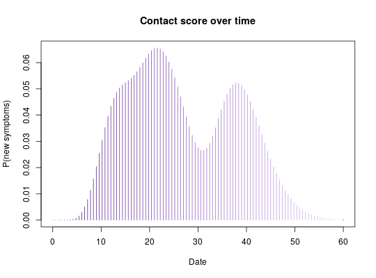

This function compute the tracing score of a contact, i.e. an individual who has had at least one recorded exposure to a case. For a contact, the tracing score is defined as the probability that this individual will show symptoms for the first time on day 't'.
contact_score(x, R, lambda, w)
distcrete package to generate discretized distributions (see
details).A function with two arguments:
t: the date for which the score should be computed.
visit_days_ago: the number of days since the last visit to the
contact, defaulting to 1, which means that the last visit happened the
day before t.
See the distcrete package for generating discretized
distributions at: http://github.com/reconhub/distcrete.
if (require(distcrete)) { ## generate serial interval distribution SI <- distcrete("gamma", 1L, w = 0, 10, 0.65)$d plot(SI, type="h", xlim=c(0,50), xlab = "Days") title("Serial interval distribution") ## get tracing score function for: ## - exposure to cases with onsets: 1, 10, 25 ## - R = 2.1 ## - lambda = 3.5 f <- contact_score(c(1,10,25), R = 2.1, lambda = 3.5, SI) ## score for various days f(0) # day 0 f(10) # day 10 f(10:20) ## plot score for various days plot(f, type = "h", xlim = c(0,60), col = pal1(100), xlab = "Date", ylab = "P(new symptoms)") title("Contact score over time") }